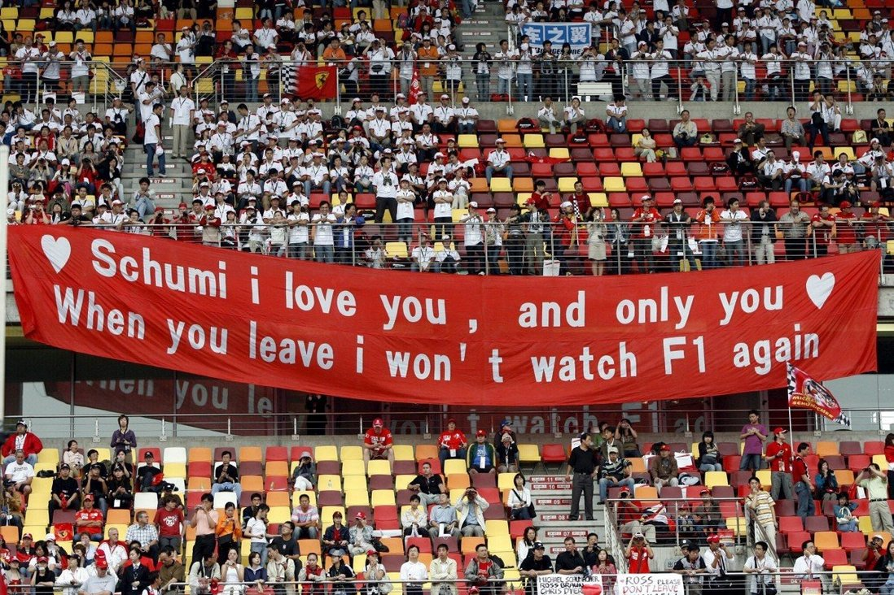

History
Since the Formula One World Drivers' Championship began in 1950 the title has been won by 32 different drivers,
15 of whom won more than one championship. Of the multiple champions the most prolific was Juan Manuel Fangio,
whose record of five titles stood for five decades until it was eclipsed by the most successful driver in the
sport's history.
Seven times a champion, Michael Schumacher also holds nearly every scoring record in the book
by a considerable margin. Though his ethics were sometimes questioned, as was his decision to make a comeback
after retiring, his sheer dominance when in his prime is beyond doubt...

Last Victory
Michael Schumacher set a record for the longest gap between first and last wins with what would prove to be his
last Formula One victory in Shanghai on October 1, 2006.
That record has since been passed – Kimi Raikkonen did so at the 2014 US Grand Prix, nearly 15 years after his
first win in Malaysia in 2003, eclipsing Schumacher’s 14-year gap between Belgium in 1992 and China in 2006.
Raikkonen has not won since, by the way.
A more interesting record is that Schumacher’s win in Shanghai was his 91st in Formula One. It is a record that
is soon expected to be broken by British Mercedes driver Lewis Hamilton, who sits on 90 wins.
It is such a feat that Netflix were with Hamilton at Sochi at the last Grand Prix, where he was given two
penalties and finished on the podium instead of being the race winner.